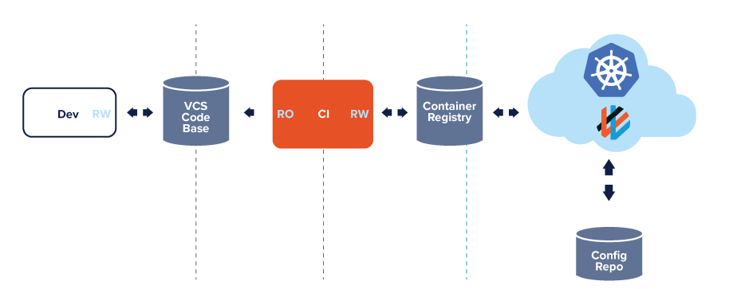
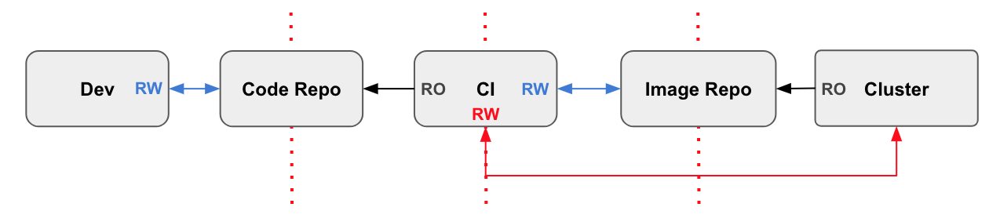
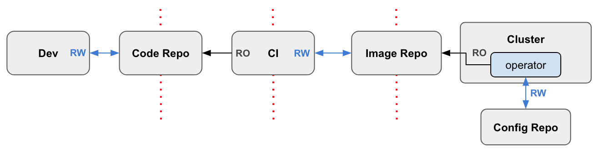
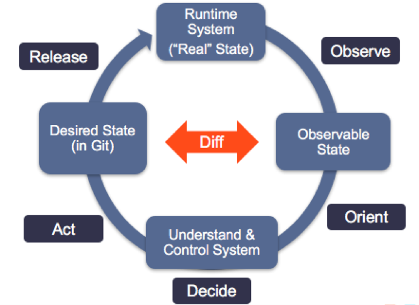
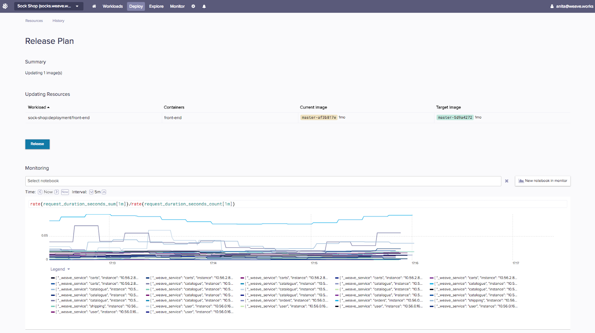

GitOps是什么?

GitOps Kubernetes集群管理和应用程序交付的一种方法。它是用Git作为声明式基础架构和应用程序的单一事实来源。通过将Git作为交付管道的中心，开发可以通过拉取请求(Pull Request)来加速和简化Kubernetes应用程序的部署和运维任务。
一种构建云原生应用的操作模式
GitOps可以概括为以下两点:
- Kubernetes和其它云原生技术的一种操作模式，提供一组统一部署，管理和监控容器化集群和应用程序的最佳实践。
- 面向开发者的管理应用程序的经验，将端到端的CI/CD管道和Git工作流应用于运维和开发。
GitOps的主要优点
当Git中有变更发生时，自动化交付管道会自动变更你的基础架构。然而GitOps概念远不止于此 - 它使用工具将整个应用程序的实际生产状态与源码管理工具中的代码进行比较，当你的集群与实际状态不符时，给出提醒。
通过应用GitOps最佳实践，你的基础架构和应用程序会有一个“事实来源”，这将提高开发团队的速度并提高系统可靠性。
采用GitOps最佳实践的好处是深远的，并提供：
提高生产力
自动化的持续部署加上集成的反馈控制回路提升了平均部署时间。你的团队每天能够提交30到100倍的更多变更，将总体开发输出提高2到3倍。增强开发体验
推送代码而不是容器。开发不需要深入了解Kubernetes就可以使用熟悉的工具(比如Git)快速地更新Kubernetes应用和添加新的功能。新入职的开发能够在几天内而不是几个月内快速地提升开发效率。提高稳定性
当你使用Git工作流管理你的集群时，你不需要通过Kubernetes就能够自动获取便于审核的集群的所有变更日志。通过审核跟踪谁在何时变更了你的集群能够满足SOC 2合规性并能确保稳定性。高可用性
借助Git恢复/回滚和分叉功能，你将获得稳定并可重复的回滚功能。因为你通过Git描述了整个系统，你将有一个单一的事实来源用来从崩溃中恢复，从而将你的恢复时间(MTTR)从几小时降到几分钟。一致性和标准化
由于GitOps提供了统一的模型用来变更基础架构，应用以及Kubernetes add-on，你可以在整个组织中实现一致的端到端的工作流。不仅你的持续集成和持续交付管道通过拉取请求(Pull Request)驱动，你的操作任务通过Git也完全可以重现。更健壮的安全保证
Git的强正确性以及安全保证(背后是健壮的用于追踪和管理变更的加密技术)，以及签名变更以证明作者身份和来源的能力是安全定义集群目标状态的关键。
GitOps是满足云原生的持续交付
GitOps是从DevOpsSite Reliability Engineering(站点可靠性工程)的想法中逐渐演变出来的，这些想法始于2016念Martin Fowler对持续集成的全面概述
自由选择所需的工具
作为CI/CD管道的一个工作流，GitOps被描述为开发过程的圣杯。由于没有单一的工具能够完成CI/CD管道中所有的工作，GitOps可以让你为每个部分选择最佳的工具。你可以从开源生态系统选择一组工具，也可以从闭源中选择一组工具，你甚至可以根据你的具体情况，组合使用它们。创建CI/CD管道最困难的部分是将所有的工具组合在一起。
无论你选择什么工具来构建交付管道，通过Git(或任何版本管理系统)应用GitOps的最佳实践都应该是你流程中不可或缺的组成部分。这样做可以轻松地过渡到持续交付。不论是从技术角度还是从文化角度都应该如此。
GitOps的原则
开始使用GitOps工作流管理你的集群，必须具备以下条件：
1. 整个系统以声明方式描述
Kubernetes只是众多现代云原生工具的一个例子，它们是可“声明的”，可以被视为代码。可声明意味着配置是由一组事实而不是一组指令来保证的。将你的应用的声明版本管理到Git，你只有一个事实来源。你可以轻松地部署和回滚Kubernetes的应用。更重要的是，当灾难发生时，你可以快速可靠地重现集群的基础架构。
2. 在Git中管理规范的目标系统状态版本
通过将你系统的声明存储在版本管理系统中，并作为你的规范性事实来源，你可以从一个地方获取和驱动所有的内容。这简化了回滚操作，你可以使用“Git Revert”来回滚到之前的应用程序状态。借助Git出色的安全保障，你可以使用SSH密钥对提交进行签名，从而对代码的作者和来源实施强有力的安全保障。
3. 批准的更改可以自动应用于系统
一旦将声明的状态保存在Git中，下一步就是允许对该状态的任何更改都能够被自动应用于你的系统。有意义的是，你不需要集群的账号来更改你的系统。借助于GitOps，状态定义存在于这个隔离环境之外。这使你可以解耦做什么与如何做。
4. 软件代理确保差异的正确性并报警
一旦你的系统状态被声明并保存在版本控制系统中，每当实际状态与期望状态不符，软件代理就可以通知你。代理的使用还可以确保你的整个系统是自修复的。通过自修复，不仅仅是指节点或pod失败时(Kubernetes会处理这类失败)，而是在更广泛的意义上，比如人为错误的情况。在这种情况下，软件代理充当了你的操作的反馈和控制闭环。
Git赋能基础架构即代码(IAC)工具
Kubernetes只是众多现代云原生工具的一个例子，它们是可“声明的”，可以被视为代码。可声明意味着配置是由一组事实而不是一组指令来保证的。例如，“有十个redis服务器”，而不是“启动十个redis服务器”，并且提示我可行。
借助声明式工具，你的整个配置文件可以在Git中进行版本管理。通过使用Git作为事实来源，你可以轻松地部署和回滚Kubernetes的应用。更重要的是，当灾难发生时，你可以从Git中快速可靠地重现集群的基础架构。
IAC工具 vs. GitOps
作为能够按要求创建服务器的基础架构即代码工具已经存在相当长的一段时间了。这些工具产生了保持基础架构及代码配置版本化，可备份化以及可重现的概念。
但是现在由于Kubernetes几乎完全是声明性的，结合不可变容器，可以将这些概念中的一些扩展到管理应用程序及其操作系统。
能够管理和比较基础架构和应用程序的当前状态，以便借助使用Git完整的审计跟踪，你能测试，部署，回滚和前滚，这是GitOps理念及其最佳实践内容。这是可行的，因为Kubernetes几乎完全通过声明性配置进行管理，以及容器也是不可变的。
在Weaveworks，我们使用Terraform和Ansible来创建服务器。我们将那些配置文件保存在Git中进行版本管理。IAC工具及其相关的配置文件构成了我们GitOps工作流的核心部分，如果发生灾难，可以做到近乎实时的集群恢复。通过GitOps FAQ了解更多的基础架构及代码与GitOps的区别。
我的系统与事实来源出现差异该如何？
声明式工具允许你在Git中描述期望的真实状态。但是在实际系统中的真实状态可能会有问题，这可能与版本管理系统中描述的状态有差别。
- 你如何知道实际系统达到了期望状态？
- 当有差异时，你能得到通知吗？
- 有什么机制类似于“煤矿中的金丝雀”在你遇到麻烦时通知你？
- 你如何触发集群与版本管理系统之前的同步？
这里有现成的技术.
IAC工具，比如Chef，Puppet和Ansible支持“差异警告”功能。这有助于运维人员知道何时应该采取行动将实际系统收敛到期望状态（通过配置脚本定义的）。甚至最近，最佳实践是部署不可变镜像（比如容器），以便尽可能减少差异。
在“GitOps”模型中，在一组用来比较期望状态和实际状态的“比较”和“同步”工具（kubediff, 以及 terradiff 和ansiblediff）的辅助下，我们使用Git解决差异和收敛。
GitOps构建在不可变基础架构之上
GitOps充分利用不断发展的不可变基础架构和声明式容器编排。在Weaveworks，我们一天部署多次。为了降低部署后变更的风险，无论是有意的还是偶然的“配置偏差”，我们必须维护一个可重现且可靠的部署过程。
我们整个系统的期望状态（也就是“事实来源”）是在Git中描述的。我们使用容器实现不可变性，以及Terraform和Ansible等不同的云原生工具来自动化和管理我们的配置。这些工具与容器以及Kubernetes声明性的本质一起提供了在发生灾难时完整恢复所需要的东西。
与IAC工具协作
当你将GitOps原则应用于“所有方面”时，除了报警规则和仪表盘之外包括机器配置，应用程序和服务，所有这些都保存在版本管理系统中。
除非通过Git，否则不需要访问正在运行的系统。任何一组更改都可以是原子性的，并且能够做相应地比较。Git记录也不仅仅是审计日志，还是可用于在任何快照之前来回滚动的事物日志。
Weave Cloud的持续交付和GitOps工作流
在我们的产品Weave Cloud中, GitOps的核心机制已经内置于CI/CD的工具中了，关键部分是持续部署(CD)，支持Git-cluster同步。
Weave Cloud是专门为版本控制系统和声明式应用程序栈设计的。团队中的每个开发人员都可能熟悉Git且能够创建拉取请求(Pull Request)。现在，他们也能够使用Git加速并简化Kubernetes应用的部署。
以下是以典型的创建和更新一个新功能的开发流程：
- 推送一个新功能的拉取请求(Pull Request)到GitHub进行审核。
- 代码被同事审核并批准后，被合并到Git。
- Git合并触发CI流水线，通过一系列测试后，新构建出来的镜像被存储到镜像仓库里。
- Weave Cloud的“Deployment Automator” 检测到镜像仓库中有新的镜像，从仓库中拉取新的镜像并跟新配置仓库中的YAML文件。
- Weave Cloud的“Deployment Synchronizer” (运行在集群中)，检测到集群有更新，它从配置仓库中拉取变更后的清单并将新的功能部署到生产环境中。
支持GitOps的CI/CD管道：
使用Operator模式实现的Kubernetes控制器
Weave Cloud实现了以自定义的控制器用来监听和同步你的Kubernetes集群。控制器是使用Operator模式实现的，有两个层面的意义：首先，它更安全；其次，它能够自动处理复杂的易错的任务，比如必须手动更新YAML清单。
通过使用Operator模式，代理会代表集群监控自定义资源变更事件，以便部署这些变更。代理负责同步Git与集群，并且为你的团队提供了一种实现持续部署的简单方法。
拉 vs 推管道
推管道
目前大部分CI/CD工具使用推模型。基于推模型的管道意味着代码从CI系统开始，通过一系列的脚本或者手动使用“kubectl”将变更推到Kubernetes集群。
你不希望使用CI系统触发部署或者通过命令行手动部署，原因是可能在集群之外泄露账号。虽然可以保护你的CI/CD脚本和命令行，但你是在集群信任域之外工作。这通常不是好的做法，这也是为什么CI系统能被为生产环境攻击的载体。
具有集群外部读/写权限的推式的管道：

在Weave Cloud中，在集群内部保存账号并拉取镜像：

Weave Cloud拉管道
Weave Cloud使用由两个关键组件组成的拉取策略：一个是监测镜像仓库的”Deployment Automator”和一个集群中以维持其状态的”Deployment Synchronizer”。
在我们拉取管道模式的中心是清单（或配置仓库）的单一事实来源。开发将他们的更新代码推送到代码仓库，CI工具获取更改并最终构建出Docker镜像。Weave Cloud的“Deployment Automator”检测到新的镜像，从镜像仓库中拉取新的镜像并更新配置仓库中的YAML配置。“Deployment Synchronizer”检测到集群已经过期，并从配置仓库中拉取更改的清单，并将新的镜像部署到集群。
安装在集群中的Weave Cloud部署代理
使用群集内部的Deployment Synchronizer，你的群集账号不会在生产环境之外公开。 一旦Weave Cloud代理安装到你的集群并且与你的Git仓库已连接，你的生产环境中的任何更改都将通过具有完全回滚的Git拉请求(Pull Request)以及Git提供的方便审计日志完成。
可观察性是部署的催化剂
通过Kubernetes，GitOps可以通过拉取请求(Pull Request)管理基础架构和应用程序。但是GitOps工作流和可观察性如何协同工作？
通过GitOps工作流和实时可观察性，你的开发团队可以在部署任何新功能之前做出关键决策。由于在发布之前你可以在正在运行的集群中实时观察即将发布的服务，这意味着你能够自信，快速地部署并交付更高质量的功能。
可观察性可以被视为Kubernetes持续交付周期的主要驱动因素之一，因为它描述了任何给定时间的系统实际运行状态。观察运行系统以便理解和控制它。新功能和修复被推送到Git并触发部署管道，何时准备发布可以通过实时观察正在运行的集群。此时，根据此反馈，开发人员可以返回到管道的开始，或者部署并发布到产品集群中。
GitOps是面向发布的操作和功能模型。你向客户交付新功能的速度有多快，部分取决你的团队在此周期中通过各阶段的速度。

使用GitOps工作流和可观察性的开发人员需要回答这些问题：
- 如果自动发布一个变更，我们如何知道它确实有效？
- 如何确定我们的变更实际是在驱动改进？
- 在复杂的分布式系统中，我们如何理解，诊断问题并处理事件？
通过Weave Cloud，可观察工作负载仪表盘已集成到部署和发布流程中。在承诺将部署发布到准备环境或生产环境之前，你可以看到部署是否成功。这不仅帮助你更快地识别问题，而且由于可观察性工作负载仪表盘是实时的并且内置于部署过程中，你可以自信的一天多次地部署你的服务并确信部署没有重大缺陷。

GitOps的优点
更快的部署
通过采用GitOps的最佳实践，开发人员可以使用熟悉的工具比如Git来快速地管理Kubernetes应用的更新和新功能。通过持续的推送功能更新，企业变得更加敏捷，能够更快地反应客户需求，并在市场中更具竞争力。
更好的操作
使用GitOps，你拥有一个完整的端到端的管道。不仅你的持续集成和持续交付管道都是由拉取请求(Pull Request)驱动，而且你的操作任务也可以通过Git完全重现。
如果你正在使用Weave Cloud，可以安全地部署到正在运行的集群中，不会将敏感的账号泄露在集群之外。
更健壮的安全保证
Git的强正确性以及安全保证(背后是健壮的用于追踪和管理变更的加密技术)，以及对变更的签名从而证明作者身份和来源的能力是正确和安全地定义集群目标状态的关键。如果发生安全漏洞，可以独立于脆弱的系统使用不可变和可审计的事实来源重新创建新的系统，从而减少停机时间并允许更好的事件响应。
打包软件和发布到生产环境的职责分离也体现了最小特权的安全原则，减少脆弱影响并提供了更小的攻击面。
使得合规和审核更容易
由于以安全的方式追踪和和记录更改，因此合规性和审计变得微不足道。使用kubediff，terradiff和ansiblediff可以将集群的可信任状态定义与实际运行的集群进行比较，从而确保可追踪和审核的变更与实际相符。